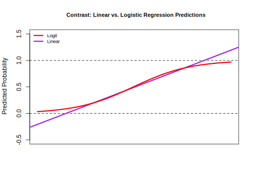

9.1 Application: Criminal Justice
This application is based on Dressel, Julia, and Hany Farid. “The accuracy, fairness, and limits of predicting recidivism.” Science advances 4.1 (2018): eaao5580.
Prediction and classification models are used all of the time in public policy, including in the criminal justice system: “where crimes will most likely occur, who is most likely to commit a violent crime, who is likely to fail to appear at their court hearing, and who is likely to reoffend at some point in the future” (Dressel and Farid)
Dressel and Farid develop and examine models that predict whether someone will recidivate– based on a measure of rearrest. They compare their own models to COMPAS (a well-known proprietary algorithm that generates risk scores) and to human-based predictions
We will develop a model similar to the one Dressel and Farid use in their paper, which seems to closely approximate COMPAS predictions.
Note: These algorithms have generated a lot of debate, concern and controversy, which we will discuss.
9.1.1 Load data
Below is a video explainer of this application, which uses classification and cross-validation.
Data include information about 7214 arrests in Broward County Florida in 2013-2014
broward <- read.csv("browardsub.csv")Variables
sex: 0 male; 1: femaleagejuv_fel_count: total number of juvenile felony criminal chargesjuv_ misd_count: total number of juvenile misdemeanor criminal chargespriors_count: total number of non-juvenile criminal chargescharge_degree: a numeric indicator of the degree of the charge: 0: misdemeanor; 1: felonytwo_year_recid: a numeric indicator of whether the defendant recidivated two years after previous charge: 0: no, did not recidivate; 1: yes, did recidivate
9.1.2 Prediction/Classification process
Recall the steps for prediction/classification
- Choose Approach
- We will use a regression to try to classify subjects as those who will / will not recidivate
- Check accuracy
- We will calculate false positive rates and false negative rates
- We will use cross-validation to do so
- Iterate
9.1.3 Step 1: Regression Model
Step 1: Choose Approach
fit <- lm(two_year_recid ~ age + sex + juv_misd_count + juv_fel_count +
priors_count + charge_degree,
data = broward)Note: our outcome is binary
table(broward$two_year_recid)##
## 0 1
## 3963 3251When you use linear regression with a binary outcome, it is called a linear probability model. We estimate the probability of recidivism– a number between 0 and 1.
- There are downsides to using linear regression with this type of outcome. Data scientists may often use a different model called logistic regression for this.
Make Prediction.
## estimates a predicted probability of recidivism for each subject
broward$predictedrec <- predict(fit)
## Range of predicted probabilities
range(broward$predictedrec)## [1] -0.1463835 1.6059606Note: One downside of linear models is they can generate probabilities below 0 or above 1. Logistic regression will constrain these due to a transformation it makes when estimating the coefficients.
9.1.3.1 Detour: Logistic Regression
As an alternative, you could use logistic regression, which data scientists may often use when trying to do a classification task– predicting which category a subject belongs to (e.g., recidivate vs. not recidivate; turned out to vote vs. did not turn out to vote). We won’t focus on logistic regression in this class, but you can know it is out there for future study.
Step 1: Choose Approach- Let’s try logistic regression instead
For details, expand.
## Logistic regression
fitl <- glm(two_year_recid ~ age + sex + juv_misd_count + juv_fel_count +
priors_count + charge_degree,
data = broward,
family=binomial(link = "logit"))
## estimates a predicted probability of recidivism for each subject
broward$predictedrecl <- predict(fitl, type="response") # need type="response" to make them probabilities
## Range of predicted probabilities of recidivism
range(broward$predictedrecl)## [1] 0.04176846 0.99891808Logistic regression keeps probabilities between 0 and 1 due to a transformation it applies to our standard regression formula. As a result, our coefficient units (coef(fitl)) are in log-odds units, which are hard to interpret. We can transform our predictions of the model into probabilities using the predict() function with type = "response".
We can compare the predictions of the probability of recidivism between the linear and logistic regression models. Note how the linear model blows past 0 and 1, while the logistic-based predictions can keep them within those bounds.

We don’t have time to go into the math of logistic regression in this course, but know that it is a desirable option for classification.
For now, let’s stick with the linear model.
9.1.3.2 Change Prediction into a Classification
Recall: we are trying to classify
- We need to make our estimates of the probability of recidivism categorical, into simply a prediction of recidivate vs. not recidivate
For now, we will use .5 as a threshold (a probability of more than .5)
# Need to make prediction binary.
# We use .5, but there are other methods for choosing this threshold
broward$predictedrecclass <- ifelse(broward$predictedrec > .5, 1, 0)Predicted Recidivism
table(predicted=broward$predictedrecclass)## predicted
## 0 1
## 4683 25319.1.4 Step 2: Check Accuracy
We are going to get extra practice with cross-validation as a way to check accuracy. Recall:
Cross-validation (train vs. test data)
- Subset your data into two portions: Training and Test data.
- Run a model based on the training data.
- Make a prediction and test the accuracy on the test data.
- Repeat process training and testing on different portions of the data.
- Summarize the results and choose a preferred model
- Eventually: Apply this model to entirely new data
Goal: Test accuracy in a way that can help detect overfitting. See how well our model will generalize to new data (data the model hasn’t seen).
We will use leave-one-out cross-validation again, but there are other methods, such as splitting data into “folds” of multiple observations at once (i.e., leaving out 100 or 1000 observations for testing instead of just 1).
## Step 1: Subset Data
traindata <- broward[-1,] # all but first row
testdata <- broward[1,] # just the first row
## Step 2: Run model on training data
fittrain <- lm(two_year_recid ~ age + sex + juv_misd_count
+ juv_fel_count +
priors_count + charge_degree,
data = traindata)
## Step 3: Predict with test data
predictedrec <- predict(fittrain, testdata)
## Step 3: Change predicted probability into a classification
cvpredictions <- ifelse(predictedrec > .5, 1, 0)Step 4: Repeat across all observations and summarize accuracy.
We want to repeat this process for every row of our data– leaving out a different row each time. To construct our loop, we embed the above process in the loop syntax.
## Iteration vector
## 1:nrow(broward)
## Container vector
broward$cvpredictions <- NA
for(i in 1:nrow(broward)){
## Step 1: Subset Data
traindata <- broward[-i,] # all but ith row
testdata <- broward[i,] # just the ith row
## Step 2: Run model on training data
fittrain <- lm(two_year_recid ~ age + sex + juv_misd_count
+ juv_fel_count +
priors_count + charge_degree,
data = traindata)
## Step 3: Predict with test data
predictedrec <- predict(fittrain, testdata)
broward$cvpredictions[i] <- ifelse(predictedrec > .5, 1, 0)
}9.1.4.1 Confusion Matrix
Check Accuracy: Confusion Matrix
confmatrix <- table(actual = broward$two_year_recid,
predicted = broward$cvpredictions)
confmatrix## predicted
## actual 0 1
## 0 3156 807
## 1 1528 1723How should we interpret each cell?
- Let’s Consider 1 = Recidivate = Positive outcome; 0 = Not Recidivate = Negative Outcome
- What is a false positive? false negative? true positive? true negative?
9.1.4.2 False Positive Rate
False Positive Rate: \(\frac{\text{False Positive}}{\text{(False Positive + True Negative)}}\)
- Out of those who do not recidivate, how often did we predict recidivate?
## One Approach
sum(broward$cvpredictions == 1 & broward$two_year_recid == 0) /
sum(broward$two_year_recid == 0)## [1] 0.2036336## Alternative Approach
## predicted recidivism, actual not
fp <- confmatrix[1, 2]
# predicted not, actual not
tn <- confmatrix[1, 1]
## False Positive Rate
fp / (fp + tn)## [1] 0.20363369.1.4.3 False Negative Rate
False Negative Rate: \(\frac{\text{False Negative}}{\text{(False Negative + True Positive)}}\)
- Out of those who did recidivate, how often did we predict not recidivate?
# Out of those who recidivate, how often does it predict not recidivate?
sum(broward$cvpredictions== 0 & broward$two_year_recid == 1) /
sum(broward$two_year_recid == 1)## [1] 0.4700092## Alternative Approach
## predicted to not recidivate, actual yes
fn <- confmatrix[2, 1]
tp <- confmatrix[2, 2]
## False Negative Rate
fn / (fn + tp)## [1] 0.4700092